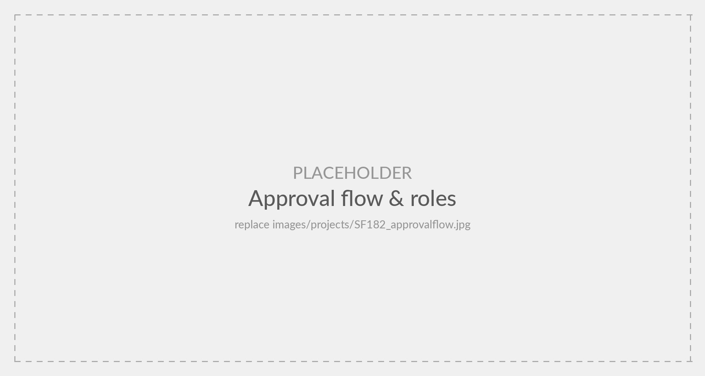
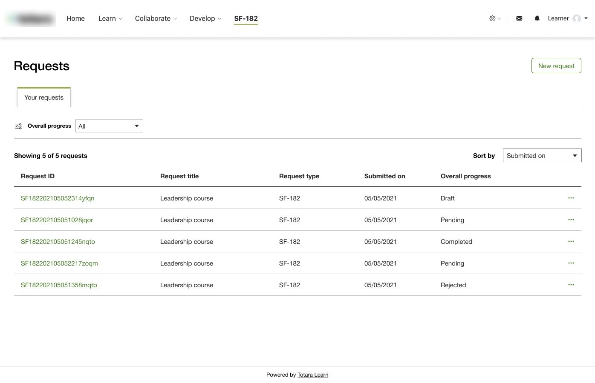
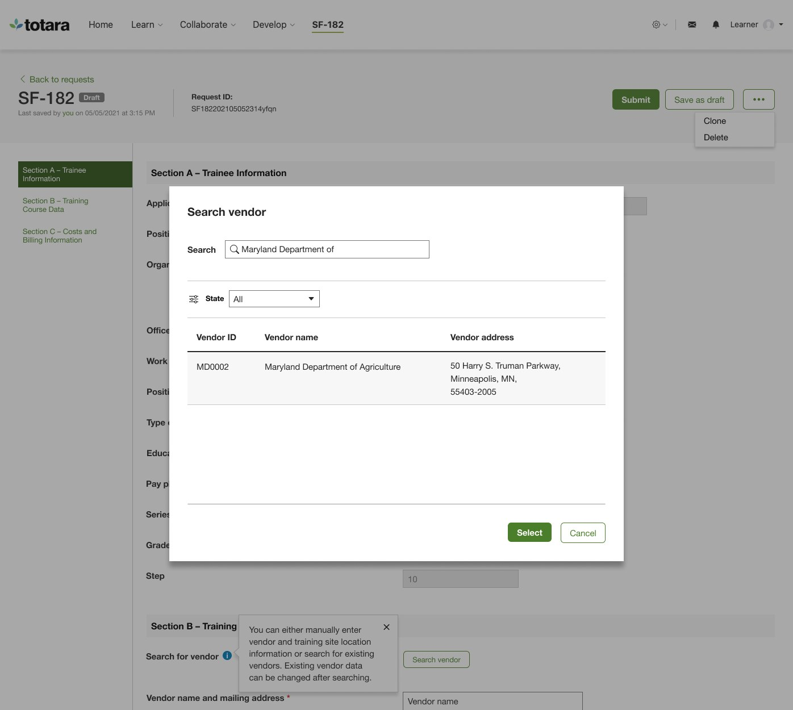
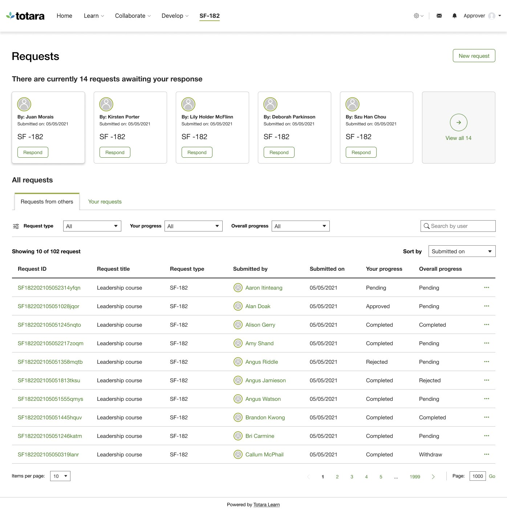
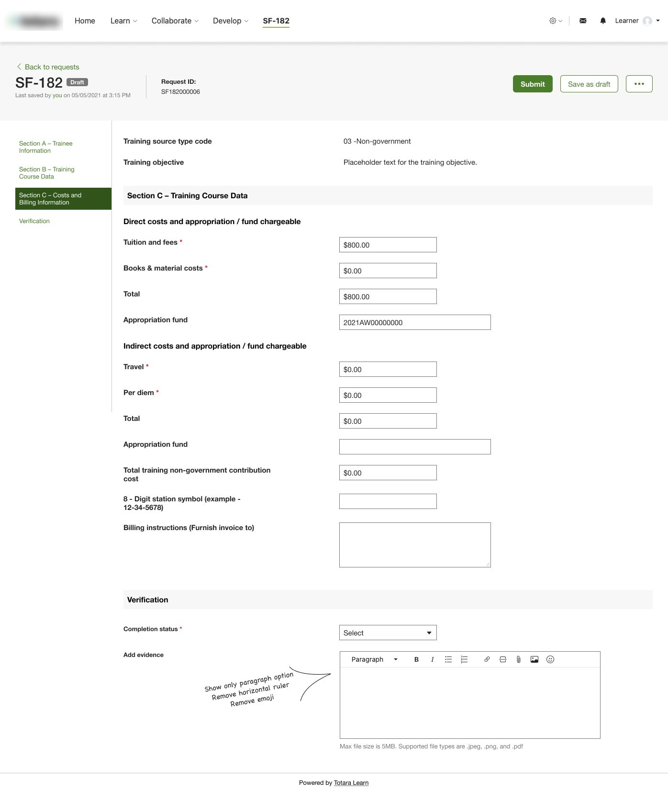
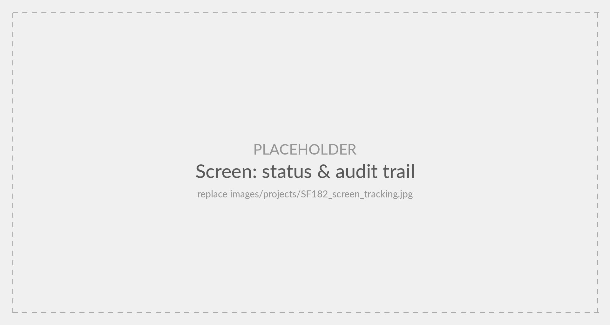
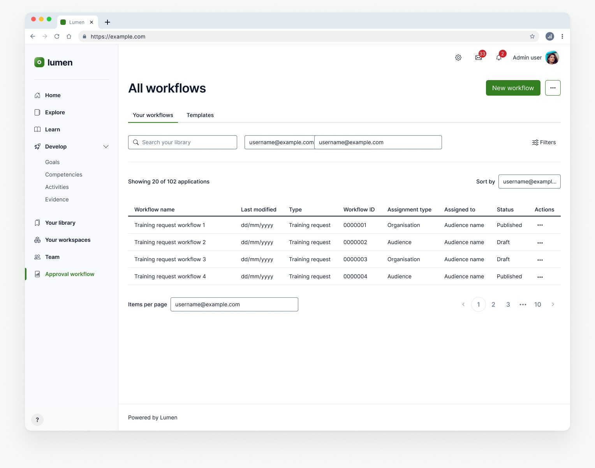
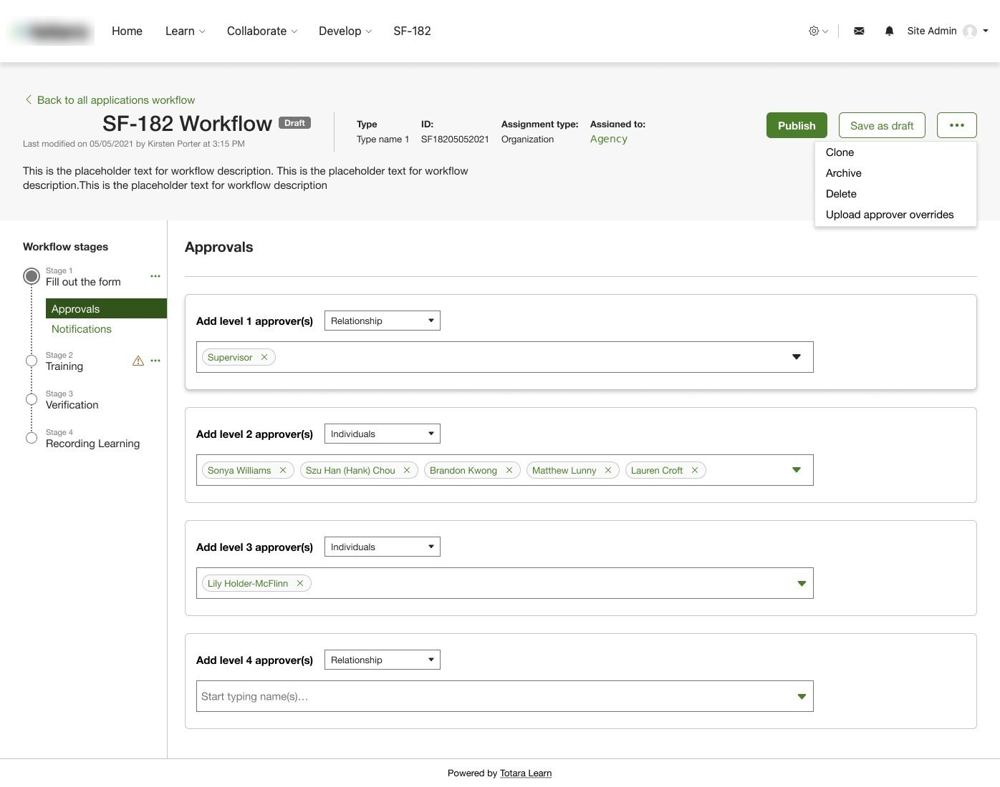

Digitising training approvals for US government agencies

Statement of originality and confidentiality: to comply with my non-disclosure agreement, I have omitted and obscured confidential information in this case study, including customer names. All screens use placeholder data. This material belongs to the organisation named on it and is shared only to demonstrate my work experience and skills for the purpose of employment.
Brief
Large US federal agencies use learning platforms to deliver training to their employees and contractors, and to assign and report on mandatory training. When an employee wants training from outside their organisation, especially training with fees or travel costs, they complete the SF-182: the Request, Authorization, Agreement and Certification of Training form from the Office of Personnel Management (OPM). The form records the request, its approvals and the completed training, and in some cases it also acts as the purchase order for the training provider.
Totara is a learning, performance and compliance platform used by organisations worldwide. TotaraGov brings it to US federal and state government agencies.
In 2021 a large US federal department moving to Totara needed its SF-182 process to come with it. Totara decided to design and build a new SF-182 plugin for Totara 14: first matching everything the department's previous system did, then becoming part of the core Totara product for other government customers. My goal was to turn a paper form into a guided digital workflow, from the learner's request, through several levels of approval, to verifying that the training was completed. [Can you name the customer (e.g. its learning portal)? If not, leave as is.]
Challenge
The SF-182 is long and technical: three sections of trainee details, training course data, and costs and billing, full of government codes, pay plans and appropriation funds. Each request then passes through up to four levels of approval, and the right approvers depend on the learner's organisation and sub-organisation. After the training, the learner has to prove they completed it and their supervisor has to verify it.
Every agency uses the form a little differently, so the design had to work for this first customer while staying flexible enough to become a core product feature. It also had to stay true to the official OPM form, which people know well and which still has to be printed.
“Turn a form that travels from desk to desk into a process everyone can see.”
My role
I owned the design side of SF-182 and the end-to-end experience, for every role involved: learners, supervisors, approvers, approval admins and site administrators. I worked closely with product owners and the customer's team, and my concept designs formed the screens of the solution design that went to the customer for sign-off. I then supported the developers through handover, using components from the Totara UI Kit.
I partnered with product on discovery workshops, research and journey mapping, so that every design decision was grounded in how the agency actually processes training requests.
Discover
Understanding the form
I started with the official OPM form itself: every section, field and code, and the OPM guidelines behind them. This showed which fields the learner fills in, which could be filled in automatically from their profile, which should be locked, and which only matter to approvers and reporting.
Learning from the existing process
Together with the product owners, I ran workshops with the customer's team to understand how SF-182 worked in their previous system: who approves at each level, how sub-organisations differ, which notifications people rely on and which reports they run. [Add the number of sessions or people involved, if you know it]
Key insights
- The form is long, and many fields are about the learner rather than the training, so the learner shouldn't have to type them.
- Learners lose track of their request once it leaves their hands.
- Approvers deal with many requests and need to see quickly what is waiting for them.
- Approval chains differ by organisation and sub-organisation, and change over time.
- Some data, like social security numbers, should not be collected at all.
- The printed OPM form is still needed, for example as a purchase order.
Define
Workflow and stages
We defined SF-182 as a workflow of four stages: filling out the form and getting approval, the training itself, verification, and recording the learning. Each stage has its own approvers and notifications.
Roles and permissions
I mapped five roles (learner, supervisor, approver, approval admin and site administrator) and what each can do at every point in a request's life, from draft and pending approval through to denied, withdrawn or verified. This user actions matrix became the blueprint for both the screens and the permissions.
Key decisions
- Up to four approval levels, following OPM guidelines, with the supervisor at level 1.
- A rejected request returns to draft. A withdrawn request returns to the start of its current stage and must be approved again.
- Approval admins can act at any level for their organisations, and submit or withdraw on someone's behalf.
- Every key action is recorded in an activity log that everyone on the request can see.
- Every step sends a clear email notification, which administrators can edit.

Design
The request form keeps the OPM structure and field labels, so it feels familiar, but makes it much easier to complete. Each role gets the screens it needs at its step of the workflow: learners, approvers, and site administrators.
Learner
Request dashboard
Everything in one place – Learners get a dashboard of their requests and their progress, so they never lose track of a request once it leaves their hands.

A guided form
Familiar, but much easier – Section names on the left let learners jump around the form. Their profile details are filled in automatically, fixed values are locked, totals are calculated for them, and choices adapt to earlier answers. Help text based on the OPM guidelines sits next to the fields that need it. Learners can save a draft at any time, and clone a past request to start a new one.

Vendor search
No more typing provider details – Learners can search a vendor list by name, address or state, and the vendor fields fill themselves in. The details can still be edited.

Approver
Approver dashboard
What needs me first – Approvers see the requests waiting for their response first, followed by every request they could act on, showing both their own progress and the overall progress.

Approving a request
Clear decisions at every level – Approvers review a request and approve or deny it at their level, and the request moves on to the next approver automatically.

After the training
Verification
Prompted, simple proof – After the training date, the learner is prompted to complete verification: they confirm whether they completed the training, add evidence such as a certificate, and update the costs if they changed. Their supervisor then approves the verification.

Activity log
Everyone can see where it is – Every key action is recorded in an activity log that everyone on the request can see.

Site administrator
Approval workflows
Workflows that change with the agency – Site administrators manage workflows: edit, clone, publish and archive them.

Approvers for each level
Flexible approval chains – Administrators choose approvers for each of the four levels by relationship or by name, upload overrides for sub-organisations in bulk with a CSV file, and edit the notifications.

Conclusion
What did we achieve?
SF-182 was built as a Totara plugin for Totara 14, replacing the paper form for our federal customer and becoming part of the core TotaraGov offering for other agencies. Learners submit and track requests in one place, approvers act on them from their dashboard, and every step is recorded and reportable through Totara's Report Builder. [Add results if you have them: number of users or requests, time saved, customer feedback]
What would I do next?
[Your reflection: what you learned designing for government, and what you would do next, e.g. making the form configurable for other agencies' fields]